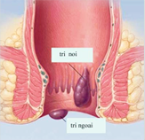
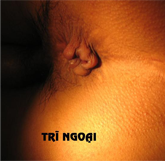
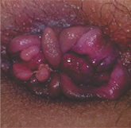
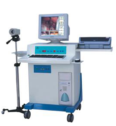

Trĩ ngoại là gì

Trĩ ngoại là những búi sưng do các tĩnh mạch căng lên hoặc do phần da ở các nếp gấp viền hậu môn bị viêm, sưng to, sự tăng sinh của các mô liên kết hoặc tụ máu mà thành. Bề mặt ngoài của trĩ ngoại bị phủ một lớp da, có thể nhìn thấy, không thể đưa vào trong hậu môn, không dễ bị chảy máu. Triệu chứng chủ yếu là đau và cảm giác có vật lạ. Theo lâm sàng có thể chia thành trĩ ngoại các mô liên kết, trĩ ngoại do các tĩnh mạch căng lên, trĩ ngoại do viêm và trĩ ngoại do tụ má
  
NGUYÊN NHÂN
Vùng hậu môn chịu nóng lạnh bất thường, táo bón, nghiện rượu hoặc ăn nhiều đồ cay, tanh cũng dễ làm kich thích trực tràng, ảnh hưởng đến sự hồi lưu huyết của tĩnh mạch, từ đó dễ gây nên trĩ ngoại.
Áp lực dồn nén về vùng bụng dưới tăng cao do người bệnh đang mắc các bệnh về viêm nhiễm cổ tử cung hoặc các vấn đề liên quan đến viêm nhiễm tiền liệt tuyến, tư thế ngồi WC quá lâu cũng tạo điều kiện thuận lợi cho trĩ ngoại phát triển.
Do chế độ ăn uống
không điều độ, thích ăn đồ cay đồ nóng.
Do viêm nhiễm hậu môn
khi người bệnh không chú ý việc giữ gìn vệ sinh sạch sẽ hàng ngày.
Do áp lực dồn nén từ vùng bụng dưới đến từ việc người bệnh vốn có hệ tiêu hóa
không tốt, lại ăn quá no, ngồi WC quá lâu cũng dễ dẫn đến trĩ ngoại.
Nguyên nhân đến từ nghề nghiệp: Ngồi, đứng nhiều quá, thiếu vận động đều là những
nguyên nhân không tốt và tính chất nghề nghiệp cũng ảnh hưởng tới việc hình thành trĩ ngoại
TRIỆU CHỨNG
1. Trĩ ngoại do tắc mạch máu:
Là do tĩnh mạch trên trĩ bị tắc hay vỡ gây chảy máu, mạch máu đầy những cục máu, ở phía dưới da phần cửa hậu môn hình thành những cục trĩ nhỏ hình ôvan, tự cảm thấy đau tức.
2. Trĩ ngoại do tĩnh mạch bị phình gập:
Là do dưới da tĩnh mạch bị gấp khúc, ở phần rìa cửa hậu môn hình thành những viền bướu hình tròn, hình bầu dục, hay hình dài. Nếu có phù thũng, hình trạng sẽ lớn hơn, trong búi trĩ có cả chỗ tắc máu và tổ chức kết đế.
3. Trĩ ngoại do chứng viêm:
Là do những nếp gấp ở cửa hậu môn bị viêm, phù thũng gây nên. Thường cửa hậu môn bị tổn thương, do lây nhiễm vi khuẩn gây nên.
4.Trĩ ngoại do tổ chức kết đế:
Do rãnh nhăn ở phần rìa cửa hậu môn phình to, các mô kết đế bị tăng sinh, trong đó mạch máu lại rất ít, do những mảnh da dài ra, gọi là trĩ ngoại do da. Ở vùng rìa hậu môn có thể thấy những mảnh da đơn phát hoặc vòng trong sa xuống và lòi ra, trĩ hình vòng có thể dạng mào hoa, gọi là trĩ ngoại dạng da thừa hay còn gọi là Trĩ tiêu binh.
tác hại
Búi trĩ sau khi bị cọ sát hay bị viêm sẽ chảy máu, chảy máu lâu ngày sẽ dẫn tới thiếu máu hoặc bị tắc hậu môn do các búi trĩ luôn ở bên ngoài. Do đi đại tiện khó khăn, thường xuyên nhịn đi vệ sinh, dẫn tới mắc các bệnh về gan, thận, nứt kẽ hậu môn, viêm đại tràng… Nữ giới dễ bị mắc các bệnh phụ khoa, u xơ đường ruột…
TẮC MẠCH TRĨ
Tắc mạch trĩ ngoại có thể là do vỡ các tĩnh mạch, tạo nên một bọc máu, hoặc là do hiện tượng đông máu ở trong lòng mạch máu. Việc rặn khi đi ngoài, khuân vác nặng, hoạt động thể thao, hậu sản… làm tăng áp lực vùng hậu môn gây sung huyết vùng hậu môn là những yếu tố thuận lợi gây tắc mạch trĩ. Một vài ngày hay một vài giờ sau khi xuất hiện, bọc máu đông được bao bọc bởi một màng mỏng, dần dần dính chặt vào da phủ, khó bóc tách. Khi thăm khám thấy ở vùng rìa hậu môn có một khối sưng màu phớt xanh, kích thước to hơn hay nhỏ hơn hạt đậu, sờ vào thấy căng. Bệnh nhân đau rát. Nếu được rạch ngay lấy cục máu đông thì bệnh nhân thấy dễ chịu ngay. Cũng có khi cục máu đông gây hoại tử phía da trên gây rỉ máu.
NGHẸT
Nghẹt là khi búi trĩ hay vòng trĩ sa ra ngoài, mạch có thể bị tắc gây phù nề và do đó không thể tự thụt lại vào trong lòng trực tràng được. Nghẹt có thể một phần, một nửa hay toàn bộ chu vi hậu môn. Khi nhìn, thấy mặt ngoài của trĩ sa nghẹt là da màu xám, ở mặt trong là niêm mạc màu nâu đỏ, sưng nề, rải rác có những nốt xám đen là do hiện tượng hoại tử bắt đầu. Khi nắn, thấy có những chỗ mềm do phù nề, ấn lõm, xen kẽ với những hạt cứng là những cục máu đông. Trĩ sa nghẹt đẩy lên rất khó hay hoàn toàn không đẩy lên được, nhất là loại trĩ vòng, do phù nề nhiều hơn và do cơ vòng thắt chặt. Trĩ sa nghẹt làm bệnh nhân rất đau đớn. Trĩ sa nghẹt hoặc là đỡ sưng nề dần, và rồi có thể đẩy lên được, hoặc là bị hoại tử, lở loét và nhiễm khuẩn.
NHIỄM KHUẨN
Nhiễm khuẩn của trĩ là viêm khe, viêm nhú. Các khe, các nhú nằm trên đường lược. Biểu hiện lâm sàng của viêm khe, viêm nhú là cảm giác ngứa ngáy hay nóng rát. Kiểm tra trực tràng làm bệnh nhân rất đau, thấy cơ vòng hậu môn thít chặt, giãn nở kém. Soi hậu môn thấy các nhú phù nề sưng to, màu trắng, các khe nằm giữa các búi trĩ bị loét nông, màu đỏ.
Phương pháp
Kỹ thuật xâm lấn HCPT là tiểu phẫu không dùng dao mổ, mà sử dụng trường điện dung cao tần làm đông và thắt nút các mạch máu, với khả năng kiểm soát tốt, không ảnh hưởng tới các vùng lân cận, nhanh chóng sinh nhiệt. Phương pháp này có nhiều ưu điểm như: độ an toàn cao, mất ít máu, ít gây đau, không tổn thương, không phù nề, không gây biến chứng, hồi phục nhanh, không phải nằm viện, thời gian tiến hành tiểu phẫu ngắn, một ca tiểu phẫu bằng phương pháp HCPT chỉ mất khoảng 15 - 20 phút và bệnh nhân hoàn toàn có thể đi lại, sinh hoạt bình thường.
AN TOÀN
ÍT ĐAU ĐỚN
NHANH CHÓNG
PHỤC HỒI NHANH
HIỆU QUẢ CAO
KHÔNG CẦN NẰM VIỆN
Lời khuyên B.Sỹ
Những kiến thức chuyên môn dưới đây có thể giúp bạn tiêu trừ hoặc làm giảm bớt nỗi đau khổ vì bệnh trĩ ngoại
1) Đi đại tiện đúng giờ: hình thành thói quen đại tiện đúng giờ, tích cực phòng ngừa táo bón, giữ vệ sinh hậu môn sạch sẽ. Đồng thời, phải phòng ngừa các chứng bệnh hậu môn trực tràng như: nứt kẽ hậu môn, trĩ nội…
2) Uống nhiều nước: sáng dậy uống 1 cốc nước ấm, thúc đẩy nhu động ruột, nếu như đi đại tiện thấy khô rát, hoặc cũng có thể sử dụng các loại thuốc nhuận tràng theo sự chỉ định của bác sĩ.
3) Ăn uống hợp lý: ăn những thức ăn dễ tiêu, không uống rượu, hút thuốc, không ăn đồ cay nóng, đồ rán, thức ăn khó tiêu hóa… Ăn nhiều hoa quả, rau xanh và đồ ăn có chứa nhiều chất xơ.
4) Tăng cường vận động: Người mắc bệnh trĩ ngoại cần tăng cường tham gia các hoạt động thể dục thể thao như: chạy bộ, tập thể dục, chơi các môn thể thao… giúp tăng cường khả năng miễn dịch, thúc đẩy nhu động đường tiêu hóa, ngăn ngừa hiệu quả táo bón.